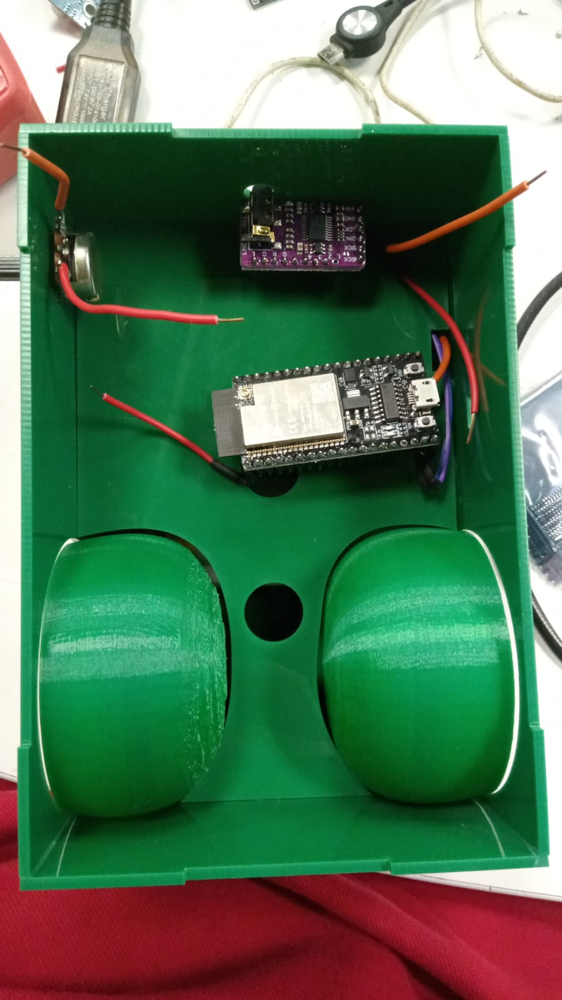
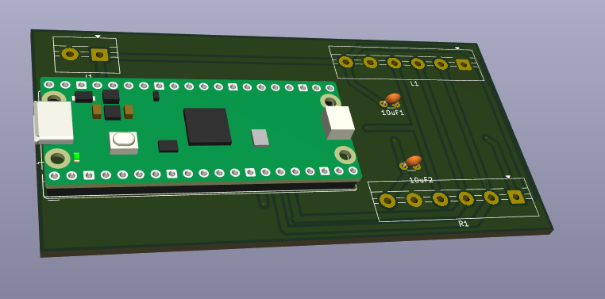
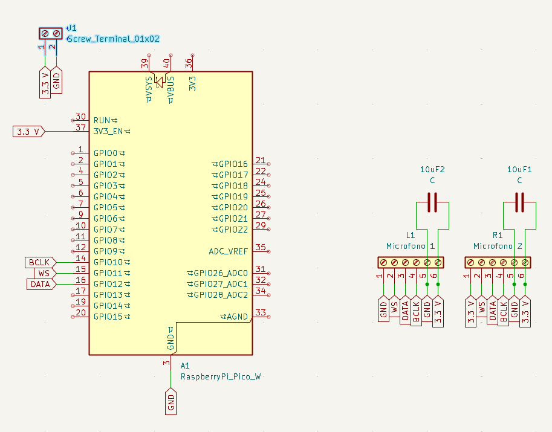
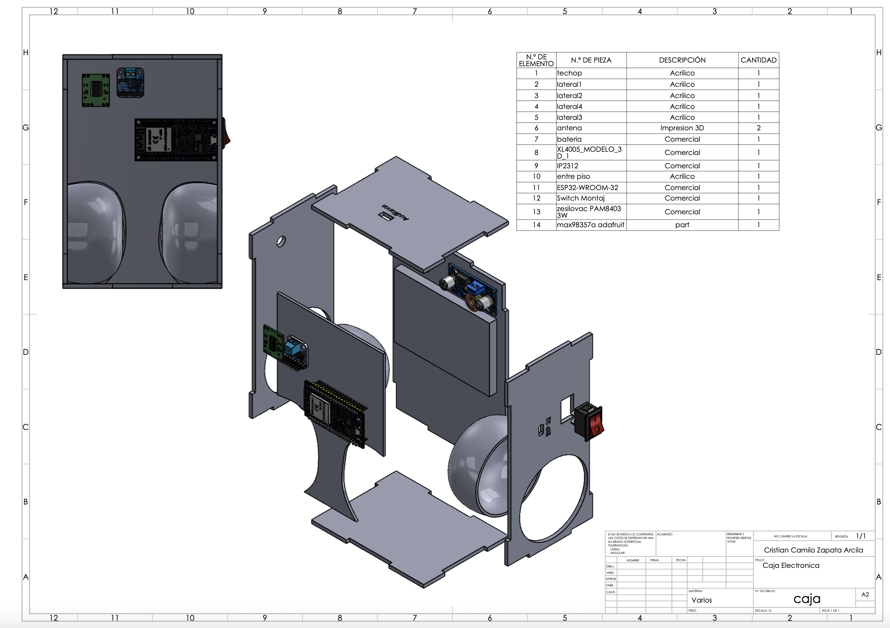
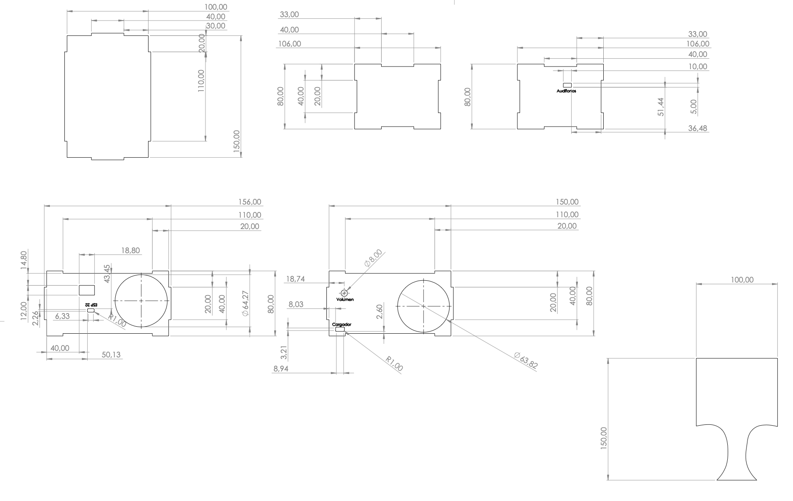
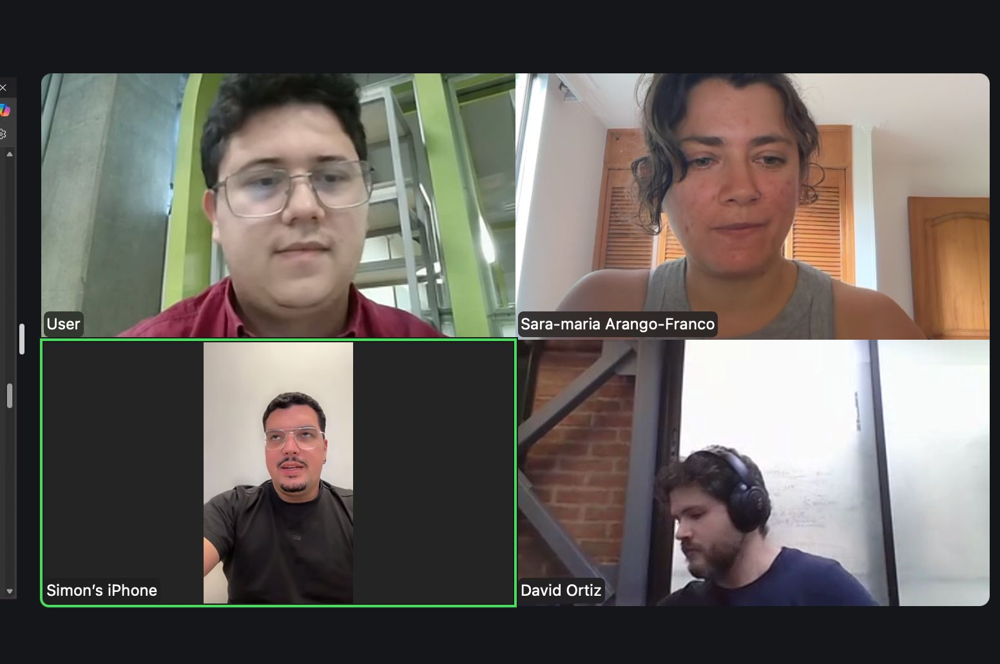

A listening device that filters urban noise to reveal birdsong. Headphones with custom digital signal processing (DSP) that selectively cancels the city and amplifies birds. Although it could serve as -yet another- fragmentation-acceleration device, the intention of this mechanism is to help us tune into what was always there, buried under -so.much- urban noise. The COVID-19 silence proved it: birds had been broadcasting all along.
Un dispositivo de escucha que filtra el ruido urbano para revelar el canto de los pájaros. Audífonos con procesamiento digital de señales (DSP) personalizado que cancelan selectivamente el sonido de la ciudad y amplifican el de los pájaros. Aunque podría servir como otro dispositivo más de aceleración de la fragmentación, la intención de este mecanismo es ayudarnos a sintonizar lo que siempre estuvo ahí, enterrado bajo -tanto- ruido urbano. El silencio del COVID-19 lo demostró: los pájaros siempre habían estado transmitiendo.






Noise fragments communication, replacing meaning with empty, isolated bits. It mirrors and deepens the fragmentation we carry in our bodies and society. People are increasingly choosing to disconnect from shared sound: noise-canceling headphones as default, the sonic commons abandoned. Are we giving up on sound as a territory we inhabit together? What are the consequences of this?
El ruido fragmenta la comunicación, reemplazando significado con bits vacíos y aislados. Refleja y profundiza la fragmentación que cargamos en el cuerpo y en la sociedad. Las personas eligen cada vez más desconectarse del sonido compartido: los audífonos con cancelación de ruido como norma, los comunes sonoros abandonados. ¿Estamos renunciando al sonido como territorio que co-habitamos? ¿Cuáles son las consecuencias de ello?
Birdsong sits in the same frequency range as human speech. It is evolutionarily associated with safety: where birds sing, things are alive. Radio Aburrá makes that signal audible again, in real time, in the middle of the city. It is a re-tuning device.
El canto de los pájaros ocupa el mismo rango de frecuencia que el habla humana. Está evolutivamente asociado con la seguridad: donde cantan los pájaros, hay vida. Radio Aburrá hace esa señal audible de nuevo, en tiempo real, en medio de la ciudad. Es un dispositivo de re-sintonización.
The first step is taking the device to the streets. Walking different cities, putting headphones on people, recording what happens when someone suddenly hears birds that were auditorily hidden in the middle of urban noise. Those conversations, reactions, and the building process itself are documentary material. In parallel, a visual work takes shape through collage, illustration, data work, and images. This visual component will be part of the museum installation alongside the device and the documentation.
El primer paso es llevar el dispositivo a la calle. Caminar distintas ciudades, ponerle los audífonos a la gente, registrar qué pasa cuando alguien de repente escucha pájaros que estaban auditivamente escondidos en medio del ruido urbano. Esas conversaciones, reacciones y el proceso mismo de construcción son material documental. En paralelo, un trabajo visual toma forma a través de collage, ilustración, trabajo con datos e imágenes. Este componente visual será parte de la instalación museística junto al dispositivo y la documentación.